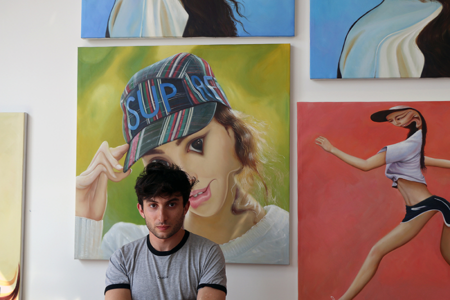

Райдер Риппс
Биография
Концептуальный художник, названный газетой Нью-Йорк Таймс «воплощением
интернет-крутана, так же умело
владеющего HTML и JavaScript, как и языком концепт-арта». Родился в
Нью-Йорке в 1986 году. Его родители —
близкие друзья Энди Уорхола — дизайнер Хелен Верин и художник Родни
Риппс.
Окончил программу новых медиа в университете The New School в 2008.
Работы Райдера Рипса выставлялись в
MoMa PS1, Eyebeam, Carroll/Fletcher и Royal College of Art. Райдер
Риппс — создатель нескольких вебсайтов,
включая Internet Archeology, Dump.fm, Been Trill и VFiles.